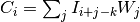

Module: filter.edges¶
edges.py - Sobel edge filter
Originally part of CellProfiler, code licensed under both GPL and BSD licenses. Website: http://www.cellprofiler.org Copyright (c) 2003-2009 Massachusetts Institute of Technology Copyright (c) 2009-2011 Broad Institute All rights reserved. Original author: Lee Kamentsky
| skimage.filter.edges.binary_erosion(input[, ...]) | Multi-dimensional binary erosion with a given structuring element. |
| skimage.filter.edges.convolve(input, weights) | Multi-dimensional convolution. |
| skimage.filter.edges.generate_binary_structure(...) | Generate a binary structure for binary morphological operations. |
| skimage.filter.edges.hprewitt(image[, mask]) | Find the horizontal edges of an image using the Prewitt transform. |
| skimage.filter.edges.hsobel(image[, mask]) | Find the horizontal edges of an image using the Sobel transform. |
| skimage.filter.edges.img_as_float(image[, ...]) | Convert an image to double-precision floating point format. |
| skimage.filter.edges.prewitt(image[, mask]) | Find the edge magnitude using the Prewitt transform. |
| skimage.filter.edges.sobel(image[, mask]) | Calculate the absolute magnitude Sobel to find edges. |
| skimage.filter.edges.vprewitt(image[, mask]) | Find the vertical edges of an image using the Prewitt transform. |
| skimage.filter.edges.vsobel(image[, mask]) | Find the vertical edges of an image using the Sobel transform. |
binary_erosion¶
- skimage.filter.edges.binary_erosion(input, structure=None, iterations=1, mask=None, output=None, border_value=0, origin=0, brute_force=False)¶
Multi-dimensional binary erosion with a given structuring element.
Binary erosion is a mathematical morphology operation used for image processing.
Parameters : input : array_like
Binary image to be eroded. Non-zero (True) elements form the subset to be eroded.
structure : array_like, optional
Structuring element used for the erosion. Non-zero elements are considered True. If no structuring element is provided, an element is generated with a square connectivity equal to one.
iterations : {int, float}, optional
The erosion is repeated iterations times (one, by default). If iterations is less than 1, the erosion is repeated until the result does not change anymore.
mask : array_like, optional
If a mask is given, only those elements with a True value at the corresponding mask element are modified at each iteration.
output : ndarray, optional
Array of the same shape as input, into which the output is placed. By default, a new array is created.
origin: int or tuple of ints, optional :
Placement of the filter, by default 0.
border_value: int (cast to 0 or 1) :
Value at the border in the output array.
Returns : out: ndarray of bools :
Erosion of the input by the structuring element.
See also
grey_erosion, binary_dilation, binary_closing, binary_opening, generate_binary_structure
Notes
Erosion [R93] is a mathematical morphology operation [R94] that uses a structuring element for shrinking the shapes in an image. The binary erosion of an image by a structuring element is the locus of the points where a superimposition of the structuring element centered on the point is entirely contained in the set of non-zero elements of the image.
References
[R93] (1, 2) http://en.wikipedia.org/wiki/Erosion_%28morphology%29 [R94] (1, 2) http://en.wikipedia.org/wiki/Mathematical_morphology Examples
>>> a = np.zeros((7,7), dtype=np.int) >>> a[1:6, 2:5] = 1 >>> a array([[0, 0, 0, 0, 0, 0, 0], [0, 0, 1, 1, 1, 0, 0], [0, 0, 1, 1, 1, 0, 0], [0, 0, 1, 1, 1, 0, 0], [0, 0, 1, 1, 1, 0, 0], [0, 0, 1, 1, 1, 0, 0], [0, 0, 0, 0, 0, 0, 0]]) >>> ndimage.binary_erosion(a).astype(a.dtype) array([[0, 0, 0, 0, 0, 0, 0], [0, 0, 0, 0, 0, 0, 0], [0, 0, 0, 1, 0, 0, 0], [0, 0, 0, 1, 0, 0, 0], [0, 0, 0, 1, 0, 0, 0], [0, 0, 0, 0, 0, 0, 0], [0, 0, 0, 0, 0, 0, 0]]) >>> #Erosion removes objects smaller than the structure >>> ndimage.binary_erosion(a, structure=np.ones((5,5))).astype(a.dtype) array([[0, 0, 0, 0, 0, 0, 0], [0, 0, 0, 0, 0, 0, 0], [0, 0, 0, 0, 0, 0, 0], [0, 0, 0, 0, 0, 0, 0], [0, 0, 0, 0, 0, 0, 0], [0, 0, 0, 0, 0, 0, 0], [0, 0, 0, 0, 0, 0, 0]])
convolve¶
- skimage.filter.edges.convolve(input, weights, output=None, mode='reflect', cval=0.0, origin=0)¶
Multi-dimensional convolution.
The array is convolved with the given kernel.
Parameters : input : array_like
Input array to filter.
weights : array_like
Array of weights, same number of dimensions as input
output : ndarray, optional
The output parameter passes an array in which to store the filter output.
mode : {‘reflect’,’constant’,’nearest’,’mirror’, ‘wrap’}, optional
the mode parameter determines how the array borders are handled. For ‘constant’ mode, values beyond borders are set to be cval. Default is ‘reflect’.
cval : scalar, optional
Value to fill past edges of input if mode is ‘constant’. Default is 0.0
origin : array_like, optional
The origin parameter controls the placement of the filter. Default is 0.
Returns : result : ndarray
The result of convolution of input with weights.
See also
- correlate
- Correlate an image with a kernel.
Notes
Each value in result is , where W is the weights kernel, j is the n-D spatial index over
 ,
I is the input and k is the coordinate of the center of
W, specified by origin in the input parameters.
,
I is the input and k is the coordinate of the center of
W, specified by origin in the input parameters.Examples
Perhaps the simplest case to understand is mode='constant', cval=0.0, because in this case borders (i.e. where the weights kernel, centered on any one value, extends beyond an edge of input.
>>> a = np.array([[1, 2, 0, 0], .... [5, 3, 0, 4], .... [0, 0, 0, 7], .... [9, 3, 0, 0]]) >>> k = np.array([[1,1,1],[1,1,0],[1,0,0]]) >>> from scipy import ndimage >>> ndimage.convolve(a, k, mode='constant', cval=0.0) array([[11, 10, 7, 4], [10, 3, 11, 11], [15, 12, 14, 7], [12, 3, 7, 0]])
Setting cval=1.0 is equivalent to padding the outer edge of input with 1.0’s (and then extracting only the original region of the result).
>>> ndimage.convolve(a, k, mode='constant', cval=1.0) array([[13, 11, 8, 7], [11, 3, 11, 14], [16, 12, 14, 10], [15, 6, 10, 5]])
With mode='reflect' (the default), outer values are reflected at the edge of input to fill in missing values.
>>> b = np.array([[2, 0, 0], [1, 0, 0], [0, 0, 0]]) >>> k = np.array([[0,1,0],[0,1,0],[0,1,0]]) >>> ndimage.convolve(b, k, mode='reflect') array([[5, 0, 0], [3, 0, 0], [1, 0, 0]])
This includes diagonally at the corners.
>>> k = np.array([[1,0,0],[0,1,0],[0,0,1]]) >>> ndimage.convolve(b, k) array([[4, 2, 0], [3, 2, 0], [1, 1, 0]])
With mode='nearest', the single nearest value in to an edge in input is repeated as many times as needed to match the overlapping weights.
>>> c = np.array([[2, 0, 1], [1, 0, 0], [0, 0, 0]]) >>> k = np.array([[0, 1, 0], [0, 1, 0], [0, 1, 0], [0, 1, 0], [0, 1, 0]]) >>> ndimage.convolve(c, k, mode='nearest') array([[7, 0, 3], [5, 0, 2], [3, 0, 1]])
generate_binary_structure¶
- skimage.filter.edges.generate_binary_structure(rank, connectivity)¶
Generate a binary structure for binary morphological operations.
Parameters : rank : int
Number of dimensions of the array to which the structuring element will be applied, as returned by np.ndim.
connectivity : int
connectivity determines which elements of the output array belong to the structure, i.e. are considered as neighbors of the central element. Elements up to a squared distance of connectivity from the center are considered neighbors. connectivity may range from 1 (no diagonal elements are neighbors) to rank (all elements are neighbors).
Returns : output : ndarray of bools
Structuring element which may be used for binary morphological operations, with rank dimensions and all dimensions equal to 3.
See also
iterate_structure, binary_dilation, binary_erosion
Notes
generate_binary_structure can only create structuring elements with dimensions equal to 3, i.e. minimal dimensions. For larger structuring elements, that are useful e.g. for eroding large objects, one may either use iterate_structure, or create directly custom arrays with numpy functions such as numpy.ones.
Examples
>>> struct = ndimage.generate_binary_structure(2, 1) >>> struct array([[False, True, False], [ True, True, True], [False, True, False]], dtype=bool) >>> a = np.zeros((5,5)) >>> a[2, 2] = 1 >>> a array([[ 0., 0., 0., 0., 0.], [ 0., 0., 0., 0., 0.], [ 0., 0., 1., 0., 0.], [ 0., 0., 0., 0., 0.], [ 0., 0., 0., 0., 0.]]) >>> b = ndimage.binary_dilation(a, structure=struct).astype(a.dtype) >>> b array([[ 0., 0., 0., 0., 0.], [ 0., 0., 1., 0., 0.], [ 0., 1., 1., 1., 0.], [ 0., 0., 1., 0., 0.], [ 0., 0., 0., 0., 0.]]) >>> ndimage.binary_dilation(b, structure=struct).astype(a.dtype) array([[ 0., 0., 1., 0., 0.], [ 0., 1., 1., 1., 0.], [ 1., 1., 1., 1., 1.], [ 0., 1., 1., 1., 0.], [ 0., 0., 1., 0., 0.]]) >>> struct = ndimage.generate_binary_structure(2, 2) >>> struct array([[ True, True, True], [ True, True, True], [ True, True, True]], dtype=bool) >>> struct = ndimage.generate_binary_structure(3, 1) >>> struct # no diagonal elements array([[[False, False, False], [False, True, False], [False, False, False]], [[False, True, False], [ True, True, True], [False, True, False]], [[False, False, False], [False, True, False], [False, False, False]]], dtype=bool)
hprewitt¶
- skimage.filter.edges.hprewitt(image, mask=None)¶
Find the horizontal edges of an image using the Prewitt transform.
Parameters : image : array_like, dtype=float
Image to process.
mask : array_like, dtype=bool, optional
An optional mask to limit the application to a certain area. Note that pixels surrounding masked regions are also masked to prevent masked regions from affecting the result.
Returns : output : ndarray
The Prewitt edge map.
Notes
We use the following kernel and return the absolute value of the result at each point:
1 1 1 0 0 0 -1 -1 -1
hsobel¶
- skimage.filter.edges.hsobel(image, mask=None)¶
Find the horizontal edges of an image using the Sobel transform.
Parameters : image : array_like, dtype=float
Image to process.
mask : array_like, dtype=bool, optional
An optional mask to limit the application to a certain area. Note that pixels surrounding masked regions are also masked to prevent masked regions from affecting the result.
Returns : output : ndarray
The Sobel edge map.
Notes
We use the following kernel and return the absolute value of the result at each point:
1 2 1 0 0 0 -1 -2 -1
img_as_float¶
- skimage.filter.edges.img_as_float(image, force_copy=False)¶
Convert an image to double-precision floating point format.
Parameters : image : ndarray
Input image.
force_copy : bool
Force a copy of the data, irrespective of its current dtype.
Returns : out : ndarray of float64
Output image.
Notes
The range of a floating point image is [0.0, 1.0] or [-1.0, 1.0] when converting from unsigned or signed datatypes, respectively.
prewitt¶
- skimage.filter.edges.prewitt(image, mask=None)¶
Find the edge magnitude using the Prewitt transform.
Parameters : image : array_like, dtype=float
Image to process.
mask : array_like, dtype=bool, optional
An optional mask to limit the application to a certain area. Note that pixels surrounding masked regions are also masked to prevent masked regions from affecting the result.
Returns : output : ndarray
The Prewitt edge map.
Notes
Return the square root of the sum of squares of the horizontal and vertical Prewitt transforms.
sobel¶
- skimage.filter.edges.sobel(image, mask=None)¶
Calculate the absolute magnitude Sobel to find edges.
Parameters : image : array_like, dtype=float
Image to process.
mask : array_like, dtype=bool, optional
An optional mask to limit the application to a certain area. Note that pixels surrounding masked regions are also masked to prevent masked regions from affecting the result.
Returns : output : ndarray
The Sobel edge map.
Notes
Take the square root of the sum of the squares of the horizontal and vertical Sobels to get a magnitude that’s somewhat insensitive to direction.
Note that scipy.ndimage.sobel returns a directional Sobel which has to be further processed to perform edge detection.
vprewitt¶
- skimage.filter.edges.vprewitt(image, mask=None)¶
Find the vertical edges of an image using the Prewitt transform.
Parameters : image : array_like, dtype=float
Image to process.
mask : array_like, dtype=bool, optional
An optional mask to limit the application to a certain area. Note that pixels surrounding masked regions are also masked to prevent masked regions from affecting the result.
Returns : output : ndarray
The Prewitt edge map.
Notes
We use the following kernel and return the absolute value of the result at each point:
1 0 -1 1 0 -1 1 0 -1
vsobel¶
- skimage.filter.edges.vsobel(image, mask=None)¶
Find the vertical edges of an image using the Sobel transform.
Parameters : image : array_like, dtype=float
Image to process
mask : array_like, dtype=bool, optional
An optional mask to limit the application to a certain area Note that pixels surrounding masked regions are also masked to prevent masked regions from affecting the result.
Returns : output : ndarray
The Sobel edge map.
Notes
We use the following kernel and return the absolute value of the result at each point:
1 0 -1 2 0 -2 1 0 -1